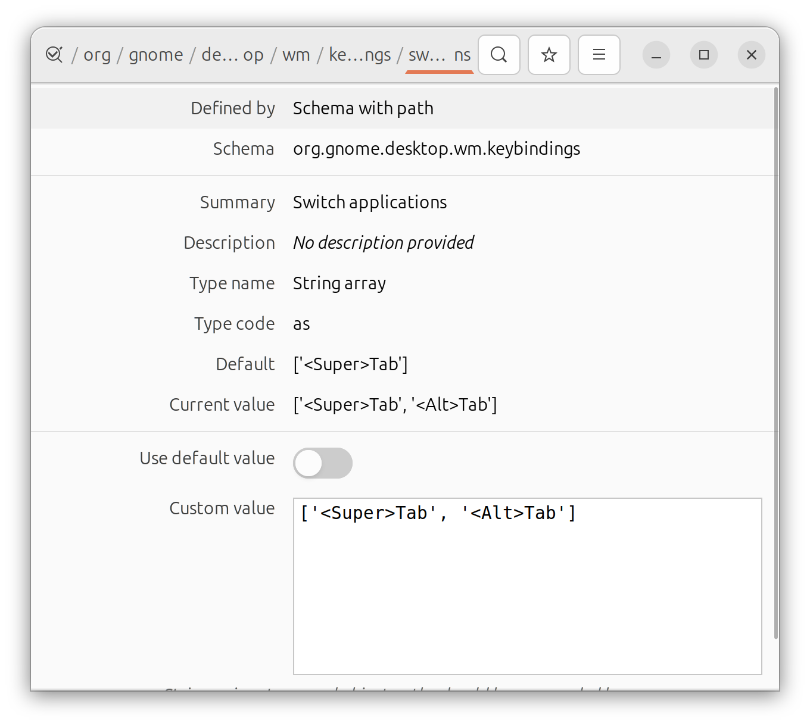

Linux on a Lenovo Thinkpad X1 Carbon Gen 12
This post details my experience installing and running Linux on a Lenovo Thinkpad X1 Carbon Gen 12.
This is a living document and I will add to it as I change things or encounter issues.
I recently got a Lenovo Thinkpad X1 Carbon Gen 12 with Ubuntu Linux pre-installed (my old Gen 11 was stolen, see my experience of using Linux on it here). This time I decided to stick with the installed Ubuntu and see how far it would fulfill my needs.
I updated the installed Ubuntu version to the most recent one 24.10 (Oracular) using Ubuntu’s upgrading system (worked just fine).
My needs are that of a university professor, i.e., I need to interact with colleagues using Microsoft products etc., I need to write papers, do data analysis, and run simulations.
Hardware
Most things just worked out of the box.
$ lspci
00:00.0 Host bridge: Intel Corporation Device 7d02 (rev 04)
00:02.0 VGA compatible controller: Intel Corporation Meteor Lake-P [Intel Graphics] (rev 08)
00:04.0 Signal processing controller: Intel Corporation Device 7d03 (rev 04)
00:06.0 PCI bridge: Intel Corporation Device 7e4d (rev 20)
00:06.1 PCI bridge: Intel Corporation Device 7eca (rev 10)
00:07.0 PCI bridge: Intel Corporation Meteor Lake-P Thunderbolt 4 PCI Express Root Port #0 (rev 02)
00:07.2 PCI bridge: Intel Corporation Meteor Lake-P Thunderbolt 4 PCI Express Root Port #2 (rev 02)
00:08.0 System peripheral: Intel Corporation Device 7e4c (rev 20)
00:0a.0 Signal processing controller: Intel Corporation Device 7d0d (rev 01)
00:0b.0 Processing accelerators: Intel Corporation Meteor Lake NPU (rev 04)
00:0d.0 USB controller: Intel Corporation Meteor Lake-P Thunderbolt 4 USB Controller (rev 02)
00:0d.2 USB controller: Intel Corporation Meteor Lake-P Thunderbolt 4 NHI #0 (rev 02)
00:0d.3 USB controller: Intel Corporation Meteor Lake-P Thunderbolt 4 NHI #1 (rev 02)
00:14.0 USB controller: Intel Corporation Meteor Lake-P USB 3.2 Gen 2x1 xHCI Host Controller (rev 20)
00:14.2 RAM memory: Intel Corporation Device 7e7f (rev 20)
00:14.3 Network controller: Intel Corporation Meteor Lake PCH CNVi WiFi (rev 20)
00:15.0 Serial bus controller: Intel Corporation Meteor Lake-P Serial IO I2C Controller #0 (rev 20)
00:16.0 Communication controller: Intel Corporation Device 7e70 (rev 20)
00:16.3 Serial controller: Intel Corporation Device 7e73 (rev 20)
00:1c.0 PCI bridge: Intel Corporation Device 7e38 (rev 20)
00:1f.0 ISA bridge: Intel Corporation Device 7e03 (rev 20)
00:1f.3 Audio device: Intel Corporation Meteor Lake-P HD Audio Controller (rev 20)
00:1f.4 SMBus: Intel Corporation Meteor Lake-P SMBus Controller (rev 20)
00:1f.5 Serial bus controller: Intel Corporation Meteor Lake-P SPI Controller (rev 20)
04:00.0 Non-Volatile memory controller: KIOXIA Corporation NVMe SSD Controller XG8 (rev 01)
49:00.0 Ethernet controller: Intel Corporation Ethernet Controller (2) I225-LMvP (rev 03)Fingerprint reader
works perfectly out of the box
# install fprintd et al
$ sudo apt install fprintd*
# save and verify that the scan works
$ fprintd-enroll -f right-index-finger
$ fprintd-verify Desktop
I tried Budgie and Unity but ended up using the pre-installed Gnome. The other desktops were buggy and I had issues with the scaling of the screen, supporting multiple screens etc. While I am not a big fan of the new Gnome shell, I can tweak it so that I can live with it for now.
Specific software
E-mail software
The Evolution has improved a lot since last time I tried. In fact, I am now able to access my University Exchange (Office 365) accounts and can even see all the calendar events, invitations and even delegates! Evolution is per now the only software that allows that (I have tried many!).
The user interface (especially for the calendar) is very rough and ugly but for now functionality beats looks! I like Thunderbirds’ interface much better but it does not support the calendar functionality I need (I even tried the paid Owl plugin but it supports only one account and is limited in its support for e.g., delegates). It seems that Thunderbird is working on finally implementing the Exchange protocol, so I will keep an eye on that.
RStudio
There was an issue when using the latest RStudio version downloaded from https://rstudio.com/products/rstudio/download/ and it would not start. I found a workaround and adding
$ rstudio --no-sandboxworks.
Obsidian
I use Obsidian for note-taking and it works perfectly on Linux. The only issue I had was getting it to sync with my iPhone. Before, when using a MacBook, I was syncing through iCloud which worked perfectly. On Linux, I was not able to find a syncing client for iCloud that I trusted and I therefore decided to use Dropbox. Unfortunately, the iPhone app cannot directly work on the Dropbox folder and I had to use a plugin called Remotely Save which syncs the Obsidian vault from the iPhone to a Dropbox folder.
On Linux, I simply use the vault synced to by this plugin (it is under /Apps/Obsidian/<my-vault>) directly. This setup seems to work without hickups, so far. Under the plugin settings, I had to turn on “sync on open” and “sync on save” to make it work.
Drop-down terminal
I tried guake but it did not work properly with the global keyboard shortcut. I have switched to the GNOME-extension ddterm which is great.
PsychoPy
I use psychopy for running experiments and installing it on Ubuntu 24.10 took a bit of tinkering to get the version numbers right.
I started with the straight-forward commands provided on the psychopy website:
$ conda create -n psychopy python=3.10
$ conda activate psychopy
$ pip install psychopy # this should complete without errorsThis worked but I could not start an experiment, getting an error message that a symbol from libstdc++.so.6 was missing. The following command installs the right version into the active conda environment:
$ conda install -c conda-forge libstdcxx-ngNext, I got a problem with the incorrect version of Qt6 (on Ubuntu, the most recent version was 6.6 but psychopy required 6.7). I had to install the correct version using:
$ conda install "conda-forge::qt6-main==6.7.3"(it has to be exactly 6.7.3).
Next, there was a weird error complaining about a missing symbol in some library that had to do with Wayland. I started my desktop into Xorg mode and the error disappeared. Weirdly, after that, I could start the experiment in Wayland mode as well (shrug).
Tweaks
Get back /var/log/messages
It is now in /var/log/syslog:
sudo ln -s /var/log/syslog /var/log/messagesFingerprint authentication (lid close)
Using the fingerprint reader is very easy and can be configured using
$ sudo pam-auth-updateI often use the laptop with lid closed and two external monitors attached. In that case, I don’t want the authentication process to use the fingerprint reader since I can’t reach it. I found a great solution here.
This solution is for an earlier Ubuntu version, for the current one, the changes have to be made in /etc/pam.d/common-auth. I added the following line before the “default” block:
auth [success=ignore default=1] pam_exec.so quiet /usr/local/bin/pam_check_lid(this runs the script pam_check_lid before the fingerprint reader is used). The script pam_check_lid has to be created with the following content:
#!/bin/sh
LID_STATE=$(cat /proc/acpi/button/lid/LID/state | cut -d':' -f2 | tr -d ' ')
case ${LID_STATE} in
closed)
echo closed
exit 1
;;
open*)
echo open
exit 0
;;
*)
# LID is open by default
echo unknown
exit 0
;;
esacThe script needs to be globally readable and executable (but NOT writable). I tested the script using pamtester at a local copy before moving it to /etc/pam.d/:
$ pamtester common-auth <username> authenticateWhile at it, I also set the maximum number of tries for the fingerprint up to 3 in /etc/pam.d/common-auth (because I often fail to place my finger correctly the first time):
auth [success=3 default=ignore] pam_fprintd.so max-tries=3 timeout=10 # debugApp-switcher vs. Window-switcher in GNOME
In GNOME, there is a distinction between switching between windows on the same screen/workspace (bound to dconf-editor to change the settings:

I also had to turn off the
Fix lock screen on suspend
Weirdly, even though in the normal “Screen Lock” settings in the Gnome settings, I have set “Lock screen on suspend” it would not do that. I had to toggle the switch in dconf-editor that is called /org/gnome/desktop/lockdown/disable-lock/screen (it was turned on by default). After disabling the “disable” switch, it is once again working.
Do not open new windows in fullscreen
Somehow that happened very often and I found it very annoying. I found a solution here that works perfectly. Change the setting under org.gnome.mutter to false or use
gsettings set org.gnome.mutter auto-maximize falseSet default file browser
I prefer the nemo file browser over the default nautilus. The default app setting in Gnome does not allow to change the default browser, but I found a solution using xdg-mime (link):
$ xdg-mime query default inode/directory
$ xdg-mime default nemo.desktop inode/directoryCool apps
Some cool apps I stumbled upon and that I use:
Things that just work perfectly as they should
- dropbox
- nordvpn
- slack
- zoom
- chrome
- libreoffice
- zotero